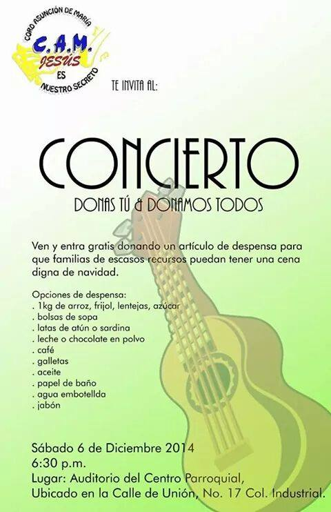

Donas Tú, Donamos Todos 1ra Edición - Diciembre 2014
El 6 de diciembre de 2014, el Coro Asunción de María organizó su primer concierto con causa que se tiene registro "Donas Tú, Donamos Todos", celebrado en el auditorio del Centro Parroquial Asunción de María.
Este evento tuvo como propósito recolectar despensas para las familias de bajos recursos de la comunidad de Tepozotlán, Estado de México, México. Como costo de entrada, se invitó a cada asistente a llevar artículos de despensa, origen del nombre del evento.